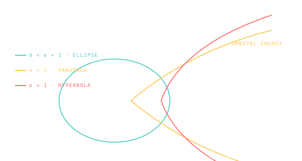

Conic Sections
Slice a cone four ways and you get every possible Keplerian trajectory — circle, ellipse, parabola, hyperbola.

101 · zoom in
There's a bizarre piece of mathematical luck at the heart of orbital mechanics. The shapes you can make by slicing a cone with a flat plane — circle, ellipse, parabola, hyperbola — turn out to be EXACTLY the only shapes a body under gravity can travel along. The Greeks studied these curves for fun in 200 BC. Two thousand years later we discovered the universe runs on them.
The four shapes form a continuum. Slow enough? You're on a circle or ellipse — bound, you'll come back. Right at escape speed? Parabola — you'll just barely never come back. Faster than that? Hyperbola — you blast through and never return. Eccentricity is the dial: 0 is a circle, 1 is the escape edge, above 1 you're free.
Real missions use all four. The cruise from Earth to Mars is an ellipse. The flyby past Jupiter on the way to Saturn is a hyperbola — relative to Jupiter, you're going too fast to be captured. The Voyager probes are now on parabolic-ish trajectories that will take them out of the solar system forever. Same equation describes all of them; only the eccentricity differs.
Take an infinite cone and cut it with a flat plane. Slice horizontally: a circle (`e = 0`). Tilt the slice: an ellipse (`0 < e < 1`). Tilt parallel to the cone's edge: a parabola (`e = 1`, the exact escape case). Tilt past that: a hyperbola (`e > 1`, escape with energy to spare). Two thousand years before Kepler, Apollonius of Perga catalogued these curves. Two centuries before Newton, Kepler discovered planets fly along them.
Every Keplerian orbit is one of these four. Bound orbits — planets, moons, satellites, anything that returns — are circles or ellipses. Unbound trajectories — flybys, escapes, hyperbolic captures — are parabolas or hyperbolas. The boundary is exact: at `e = 1` you're moving at exactly the local escape velocity.
Mission designers exploit all four. Cruise on an ellipse, flyby a planet on a hyperbola (relative to that planet), insert into orbit on an ellipse again. The simulator's `/fly` route does this naturally — the same trajectory equation handles every case, the eccentricity tells you which conic you're flying.
SEE IN THE APP
- /missions Voyager's flyby of Jupiter was a hyperbolic conic; the cruise to Jupiter was an ellipse